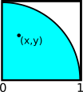

CS 124, Fall 2021
Lab 3: While and If
In this lab, you will use two of Java's "control structures": while loops and if statements. You should use only while and if in this lab, even if you know about other control structures such as for loops!
You should try to finish the first two exercises during the lab period. They are similar to the kind of short example that we covered in class. The third exercise is more complicated. You should think about it and spend some time developing an algorithm for the program, before you try to start writing code. We will do examples of algorithm development in class on Wednesday.
The programs for this lab do not use any input from the user, and you do not need TextIO. Also, there is no JavaFX graphics in this lab, just regular text output. You will create three programs from scratch.
As usual, your work for this lab is due at the start of lab next Tuesday. You should put your work for this lab in a directory named lab3, and you should submit your work by copying that folder into your homework folder in /classes/cs124_Eck/homework.
Don't forget to follow style rules!
Exercise 1: Estimating Pi
For this exercise, you will write a program that estimates the value of pi using random numbers. The next three paragraphs explain why the estimate works, but to write the program, it's not really necessary to understand the explanation. The name of the program can be EstimatePi.
 The diagram on the right shows a quarter circle with radius equal to one. A full circle with radius one has area equal to the mathematical constant pi, so the quarter circle has area pi/4. The quarter circle is inside a square with side one. The area of the square is one. Suppose that you pick a random point (x,y) in the square. It might or might not be inside the circle. The equation for the circle is x2+y2 = 1, and the point (x,y) is inside the circle if x2+y2 < 1.
If you pick a large number of random points in the square, the fraction of those points that lie inside the quarter-circle will be pi/4, because that is the fraction of the area of the square that is in the quarter-circle.
If the number of random points that you pick is totalCount and the number of points that lie in the quarter-circle is insideCount, then we can expect that the fraction insideCount/totalCount is approximately equal to pi/4, and (4.0*insideCount)/totalCount is an approximation for pi.
Your assignment is to write a program to implement this idea: Generate a large number of random points (x,y), where x and y are random numbers in the range zero to one. Count the number of times that x2+y2 < 1. After that is done, the estimate for pi is (4.0*insideCount)/totalCount. To print out the results, the last two lines of the main() routine in your program should be:
System.out.printf( "The actual value of Pi is: %1.6f%n", Math.PI ); System.out.printf( "The estimate for Pi is: %1.6f%n", estimateForPi );
Recall that we covered basic "counting loops" in class. To repeat something totalCount times, you can use a loop of the form
count = 0;
while ( count < totalCount ) {
.
. // do something
.
count = count + 1;
}
You should run your program for a total count of 100,000,000. It will take a few seconds. (If you are willing to wait ten times as long for an answer, try it for 1,000,000,000.)
Exercise 2: Six Heads
For this exercise, you must create a String of 80 H's and T's, where each character is chosen at random. You will then check whether the string contains a string of 6 consecutive H's. This simulates flipping a coin 80 times and checking whether there is any time when the coin comes up Heads six times in a row. The program for this exercise can be called SixHeads.
You will need another counting loop to count the 80 coin flips. Note that you can add a character, ch, onto a string, str, by saying
str = str + ch;
But hopefully, you be using better variable names than "str" and "ch"! You need to think about what the initial value of the string should be. What should it be, before you have added any letters onto it? And note that you can use str.indexOf("HHHHHH") to test whether HHHHHH occurs in str. The value of this expression is −1 if HHHHHH does not occur in str.
At the end of the program, you should print out the string of 80 H's and T's, and you should report the results of the test. For example:
THTHTTTHHHHHHHHTTTHHHTHHHTTHHHTHTTTHTHTHTHTTTHHHHTTHHTTTHHHHHTHHTTTTHHHTHTHHHHHT HHHHHH does occur in the string.
The probability that HHHHHH occurs is somewhere close to 1/2. (You could get a little extra credit if you write an additional program that runs the same experiment — without printing anything — 1,000,000 times and reports the fraction of experiments in which the string contained HHHHHH.)
Exercise 3: Simulated Baseball Game
The program for the third exercise will simulate a baseball game (in a very simple and unrealistic sense). The name of the program can be Baseball.
A baseball game consists of a series of "innings". In each inning, two teams get a chance to score "runs". At the end of the game, the team that has the highest total score wins. Usually, there are nine innings, but there are some complications: First, if the score is tied at the end of the ninth or later inning, the game continues. The game can only end when one team is ahead. There is no limit on how many innings there can be. Second, in the ninth inning, if the home team (the one that goes second in the inning) is ahead in the middle of the inning, then the game ends at that point, since giving the home team a chance to score at that point cannot make any difference to the outcome. This can only happen in the ninth inning.
The program will simulate what happens in a game, but it will just be making up random numbers of runs for each team; it won't actually simulate individual players or at-bats. Here is sample output from one run of the completed program:
Inning number 1
The Yankees score 0 runs
The Red Sox score 0 runs
The total score is now Yankees 0 to Red Sox 0
Inning number 2
The Yankees score 5 runs
The Red Sox score 0 runs
The total score is now Yankees 5 to Red Sox 0
Inning number 3
The Yankees score 0 runs
The Red Sox score 0 runs
The total score is now Yankees 5 to Red Sox 0
Inning number 4
The Yankees score 0 runs
The Red Sox score 1 runs
The total score is now Yankees 5 to Red Sox 1
Inning number 5
The Yankees score 0 runs
The Red Sox score 0 runs
The total score is now Yankees 5 to Red Sox 1
Inning number 6
The Yankees score 0 runs
The Red Sox score 2 runs
The total score is now Yankees 5 to Red Sox 3
Inning number 7
The Yankees score 0 runs
The Red Sox score 0 runs
The total score is now Yankees 5 to Red Sox 3
Inning number 8
The Yankees score 0 runs
The Red Sox score 0 runs
The total score is now Yankees 5 to Red Sox 3
Inning number 9
The Yankees score 0 runs
The Red Sox score 3 runs
The total score is now Yankees 5 to Red Sox 6
The final score is Yankees 5 to Red Sox 6
The Red Sox win.
Another possible ending for the game is:
Inning number 9
The Yankees score 0 runs
the Red Sox score 2 runs
The score is tied 5 to 5, so the game continues
Inning number 10
The Yankees score 0 runs
the Red Sox score 0 runs
The score is tied 5 to 5, so the game continues
Inning number 11
The Yankees score 0 runs
the Red Sox score 4 runs
The total score is now Yankees 5 to Red Sox 9
The final score is Yankees 5 to Red Sox 9
The Red Sox win.
And yet another is:
Inning number 8
The Yankees score 0 runs
The Red Sox score 5 runs
The total score is now Yankees 5 to Red Sox 8
Inning number 9
The Yankees score 2 runs
The total score is now Yankees 7 to Red Sox 8
The game ends because the Red Sox are ahead.
The final score is Yankees 7 to Red Sox 8
The Red Sox win.
The output of your program should be similar (maybe using different team names). You should show the number of runs scored in each inning. At the end, you should say who won. And you should take into account all of the ways that the game might end. One way to organize your program is to use two loops, one after the other, the first loop for the first 9 innings and the second loop for any extra innings. It is also possible to do it all in one loop, but you will need to be a little more clever about determining when the loop should end.
Note that in baseball, the most common number of runs in an inning is zero, and large numbers of run are unlikely. The web page
https://gregstoll.com/~gregstoll/baseball/runsperinning.html
has some statistics on the number of runs scored in individual innings in actual games. For example in over 70% of innings, a team scores zero runs. For full credit for this exercise, your program should at least make zero the most likely number of runs that a team can score in an inning. If you can do an especially good job of making the distribution of runs more realistic, you might get a little extra credit.